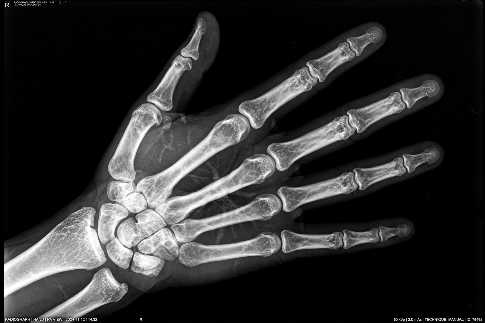

| X-ray | |
|---|---|
 Radiograph of a hand, the signature image of X-ray imaging | |
| Type | Electromagnetic radiation |
| Wavelength | ~10 nanometres to 10 picometres |
| Frequency | ~30 petahertz to 30 exahertz |
| Photon energy | ~100 eV to 100 keV (and above) |
| Discovered | 8 November 1895, by Wilhelm Conrad Röntgen |
An X-ray is a form of high-energy electromagnetic radiation, with wavelengths shorter than those of ultraviolet light and longer than those of gamma rays. Most X-rays have wavelengths between 10 picometres and 10 nanometres, corresponding to photon energies of roughly 100 eV to 100 keV. Because they can pass through many materials opaque to visible light — including the soft tissues of the body — X-rays are the basis of radiography, one of the most important diagnostic tools in medicine.
Wilhelm Conrad Röntgen, professor of physics at Würzburg, discovered X-rays on 8 November 1895 while experimenting with cathode-ray tubes. He noticed a barium platinocyanide screen fluorescing across the room from a covered discharge tube and, over the following weeks, characterised the new rays systematically — calling them "X" for unknown. His famous radiograph of his wife Anna Bertha's hand, showing her bones and wedding ring, was published with his paper "On a New Kind of Rays" at the end of December 1895 and caused a worldwide sensation. Röntgen received the first Nobel Prize in Physics in 1901; in several languages the rays still bear his name.
X-rays are produced in an X-ray tube when fast electrons, accelerated through tens of kilovolts, strike a metal target (commonly tungsten). Deceleration of the electrons produces a continuous bremsstrahlung spectrum; electrons knocked out of inner atomic shells produce sharp characteristic lines. X-rays are ionising radiation: they can eject electrons from atoms, which is both why they are hazardous in excess dose and why they can be detected by film, ionisation chambers and scintillating detectors. They travel in straight lines, are not deflected by electric or magnetic fields, and are absorbed most strongly by dense, high-atomic-number materials such as bone and lead.
In radiography, differential absorption produces shadow images of bones and dense structures. Computed tomography (CT), developed in the 1970s by Godfrey Hounsfield and Allan Cormack, rotates the source and detectors around the patient and reconstructs cross-sectional images computationally. Fluoroscopy provides real-time moving images, and mammography uses low-energy X-rays to screen breast tissue. Radiation dose is managed under the ALARA principle — as low as reasonably achievable — because accumulated ionising dose carries a small cancer risk.
X-ray crystallography — using the diffraction of X-rays by crystals — revealed the structures of salts, minerals, proteins and famously the DNA double helix (via Rosalind Franklin's "Photo 51"). X-rays inspect welds and castings, screen airport baggage, authenticate paintings, and are emitted by astronomical sources such as black holes and neutron stars, observed by space telescopes like Chandra. X-ray fluorescence identifies elements in samples, and high-dose X-rays are used in radiotherapy to destroy tumours.